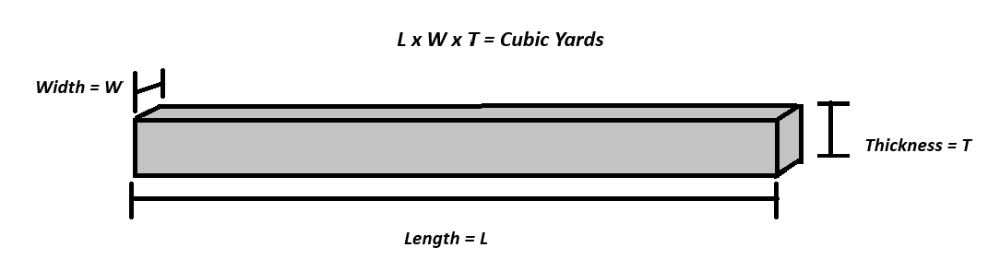

Accurately Calculate Cubic Yards for Slabs and Footings
Calculating concrete is simple math, but mistakes can be costly. Ordering too much leads to expensive disposal fees and waste. Ordering too little risks a **"cold joint"**—a seam that forms when fresh concrete is poured next to hardened concrete—which severely weakens the final structure. Use this calculator to ensure accuracy, safety, and budget adherence.
**Pro Tip:** Always add 5-10% to your final calculated cubic yardage to account for uneven subgrade, spills, and slight variances in forms. This acts as a safety factor to ensure you don't run short.
Q: Why is the result in Cubic Yards?
A: Concrete is the only common building material that is ordered and sold by the cubic yard in the U.S. Knowing this final number is essential for placing an order with any concrete supplier.
Q: Can I use this for non-rectangular shapes?
A: Yes. For complex areas, break the area down into simple geometric figures (rectangles, triangles, circles) and calculate the volume for each section separately. Then, sum these individual volumes for your total.